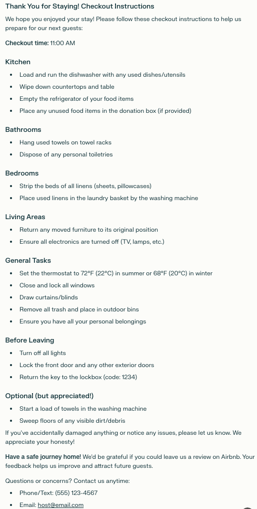

Thank You for Staying! Checkout Instructions
We hope you enjoyed your stay! Please follow these checkout instructions to help us prepare for our next guests:
Checkout time: 11:00 AM
Kitchen
Load and run the dishwasher with any used dishes/utensils
Wipe down countertops and table
Empty the refrigerator of your food items
Place any unused food items in the donation box (if provided)
Bathrooms
Hang used towels on towel racks
Dispose of any personal toiletries
Bedrooms
Strip the beds of all linens (sheets, pillowcases)
Place used linens in the laundry basket by the washing machine
Living Areas
Return any moved furniture to its original position
Ensure all electronics are turned off (TV, lamps, etc.)
General Tasks
Set the thermostat to 72°F (22°C) in summer or 68°F (20°C) in winter
Close and lock all windows
Draw curtains/blinds
Remove all trash and place in outdoor bins
Ensure you have all your personal belongings
Before Leaving
Turn off all lights
Lock the front door and any other exterior doors
Return the key to the lockbox (code: 1234)
Optional (but appreciated!)
Start a load of towels in the washing machine
Sweep floors of any visible dirt/debris
If you've accidentally damaged anything or notice any issues, please let us know. We appreciate your honesty!
Have a safe journey home! We'd be grateful if you could leave us a review on Airbnb. Your feedback helps us improve and attract future guests.
Questions or concerns? Contact us anytime:
Phone/Text: (555) 123-4567
Email: host@email.com
Thank you for choosing our Airbnb. We hope to host you again soon!